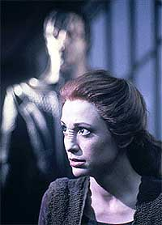
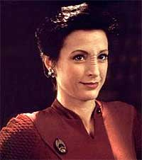
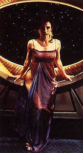
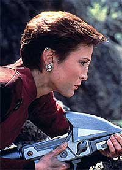

|
Kira
Nerys
Espcie:
Bajoriana
Nascimento: Nascida em 2343 na Provncia Dahkur, em Bajor.
Formao: Ex-guerrilheira da Resistncia Bajoriana. Oficial da Milcia Bajoriana.
Posio: Oficial de ligao (entre os governos de Bajor e da Federao) e primeiro oficial da estao Deep Space Nine.
Patente: Major, sendo promovida a tenente coronel em 2375. Supostamente promovida a coronel ao final daquele ano. Recebeu uma patente de campo de comandante da frota Estelar, ativa por um breve perodo de tempo, por ocasio da campanha final da guerra do Dominion em Cardassia.
Paradeiro: Permaneceu como oficial comandante de DS9 aps o desaparecimento do capito Sisko nas cavernas de fogo em 2375.
Laos
familiares e afetivos
Pais: Kira Taban (pai, falecido) e Kira Meru (me, falecida). Taban apreciava a jardinagem, enquanto Meru era uma pintora de cones. Nerys e sua famlia passaram um bom tempo no campo de refugiados Singha. Quando ela tinha trs anos de idade, lhe foi contado que sua me morrera no campo por desnutrio. Anos depois (em 2374), Nerys descobriu que Meru fora levada para Terok Nor para servir como mulher de conforto aos Cardassianos baseados na Estao, ento recm construda (e ainda no completamente operacional). Ela caiu nos olhos de Dukat, e acabou tornando-se sua amante. Dessa forma, seu pai Taban passou a receber comida extra e remdios, o que possibilitou de certa forma a sobrevivncia de Nerys e seus irmos. Meru morreu sete anos depois, num hospital Cardassiano. Taban sempre dizia que Meru era a pessoa mais forte que ele j encontrara, e mesmo sentindo sua falta, acreditava que o sacrifcio de sua esposa salvara suas vidas. Foi durante a Ocupao que Taban, foi morto. Ele foi ferido durante um ataque Cardassiano sua vila, pela Unidade de Armas Pesadas, Terceiro Grupo de Assalto, Nona Ordem. Ele tentou conversar com os soldados, mas eles acabaram por queimar seu jardim e casa, por fim ferindo-o fatalmente.
Irmos: Kira Reon e Kira Pohl (irmos mais jovens, ambos falecidos).
Marido: Nenhum
Filhos: Apesar de no possuir filhos biolgicos, Nerys levou a termo a gravidez do segundo filho de Miles O'Brien com Keiko (Kirayoshi O'Brien).
Relacionamentos amorosos: o falecido vedek Bareil (2370-2371), Shakaar Edon (2372-2373) e Odo (2374-2375). Teve um breve caso com o Bareil do universo do espelho em 2374.
Maiores amigos: Odo, Jadzia Dax (falecida), Shakaar Edon, Lupaza (falecida), Furrel (falecido), Trentin Fala (falecido) e Tora Zyial (falecida filha bastarda de gul Dukat). E tambm o legado Cardassiano Tekeny Ghemor (falecido).
Curiosidades
Kira adora jogar springball, (uma jogo com raquetes que se assemelha ao nosso squash), que ela pratica desde criana, quando jogava com seus irmos e sempre acompanha os resultados dos campeonatos. Suas qualidades como jogadora so tantas, que os habitantes da Estao comparecem para assistir aos seus jogos.
Nerys aprecia um bom Spring Wine (Vinho Bajoriano), caf quente, raktajinos (uma espcie de "caf Klingon"), chs de gengibre e de jumja (erva nativa de Bajor), stardrifters (bebida verde intoxicante), alm de considerar chocolates Rigelianos sua guloseima predileta.
Kira gosta de msica, mas seu conhecimento musical limita-se a compositores Bajorianos, sendo Tor Jolan um dos seus favoritos. E ainda Sonata Verani, que alm de ser seu amigo, um dos msicos que mais gosta.
Kira considera holosuites uma completa perda de tempo, que qualquer coisa melhor ser feita na vida real do que numa holosuite.
Normalmente Kira no gosta de flores, mas nos aniversrios de sua me, ela sempre compra um buqu de lilacs, a flor favorita de sua progenitora, segundo seu pai.
Tambm no aprecia pirulitos de jumja, pratica meditao silenciosa regularmente, uma completa negao para as artes (ao contrrio de sua falecida me, mas curiosamente tem algum talento para leitura labial) e seu cdigo de autorizao Kira-1-5-7-alpha.
Biografia
Kira Nerys nasceu na provncia de Dahkur em 2343 e cresceu no campo de refugiados de Singha, em Bajor.
rf de me, em 2355, comeou a lutar contra os Cardassianos. Ela foi recrutada por Lorit Akrem para integrar o Grupo de Resistncia Shakaar, aos 12 anos de idade.
No incio ela somente limpava as armas, mas em 2356, aos 13 anos de idade, numa noite faltou um homem para participar de uma emboscada. Nerys queria ir, mas todos achavam que ela era muito nova e pequena. No entanto, uma das integrantes da Resistncia, Lupaza, apoiou-a. Mas era de Shakaar a deciso final de inclu-la ou no na emboscada. Durante a operao, Kira disparou seu rifle e s parou quando a carga acabou. Lupaza fez um brinco para Nerys com parte do metal que eles pegaram na emboscada.
Durante a Ocupao, Nerys participou de diversas aes contra os Cardassianos. Em 2357, ajudou na liberao do campo de trabalhos forados de Gallitepp e em outra ocasio de um atentado a bomba em um depsito de armas em Hathon.
Em um certo momento de sua participao no grupo de Shakaar, seu pai foi mortalmente ferido quando Cardassianos queimaram a vila onde ele vivia. Nerys partiu em uma misso ao invs de velar os ltimos momentos do seu pai, algo que ela lamentou amargamente tempos depois.
Kira aprendeu a pilotar caas de sub-impulso, usando-os na poca da Ocupao e passou quase 10 anos escondendo-se dos Cardassianos nas montanhas da provncia de Dahkur junto com seu Grupo de Resistncia Shakaar, incluindo particularmente um inverno extremamente rigoroso entre os anos de 2160 e 2161 onde no tinham energia para os feiser, pouca comida e tendo que se esconder nas cavernas para no serem detectados pelos sensores Cardassianos.
 Em 2365 Nerys foi recrutada para descobrir uma listagem com nomes de Bajorianos que eram colaboradores dos Cardassianos. Isso a levou para Terok Nor, onde foi atrs de Vaatrick, um Bajoriano dono de uma pequena loja na Estao. Aps ser surpreendida pelo prprio Vaatrick em sua loja, enquanto procurava pela lista, acabou tendo de mat-lo. Foi ai que conheceu Odo, que fora designado por gul Dukat para investigar o assassinato. Nerys era a principal suspeita, mas acabou por convencer Odo que ela no tinha nada a ver com o ocorrido (ela admitiu ser uma terrorista sim, mas designada para uma outra misso na estao). Somente anos depois (em 2370), Odo descobriu a verdade.
Somente uma vez Kira foi capturada pelos Cardassianos, juntamente com Shakaar e Lupaza, tendo sido levados para um centro de interrogao. Felizmente eles foram resgatados por Furrel, um companheiro de grupo de Resistncia (que perdeu um dos braos na operao de resgate).
2369:
Aps a retirada Cardassiana de Bajor e o fim da ocupao, Nerys acabou sendo incorporada na Milcia Bajoriana com o posto de Major. A Estao Espacial de processamento de minrio Terok Nor foi abandonada pelos Cardassianos e tornou-se propriedade de Bajor. Necessitando de ajuda para se fortalecer, o Governo Provisrio convidou a Federao para ajudar na administrao da Estao, agora chamada de Deep Space Nine. Kira designada para ser a oficial de ligao entre Bajor e a Federao e tambm Primeira Oficial do Comandante Benjamin Sisko. Num primeiro momento esse no era o lugar onde gostaria de estar, e inclusive no concordava com o Governo Provisrio em convidar a Federao para ajud-los. Quando a Fenda Espacial/Templo Celestial foi descoberto, Sisko declarado como sendo o Emissrio dos Profetas por kai Opaka. Nerys acaba aceitando-o como o Emissrio, e o respeito por seu comandante comea a crescer. A importncia do Sistema Bajoriano cresce a cada dia devido a Fenda Espacial, assim como o risco da volta dos Cardassianos, quando Nerys passa a aceitar a presena da Federao como necessria para a proteo de Bajor.
A atuao de Nerys em diversas questes foi de fundamental importncia, seja para a segurana da Estao ou para a realizao de misses vitais.
Nerys ajudou a impedir que um velho amigo seu. Um compatriota e terrorista do Kohn-Ma (um grupo terrorista radical Bajoriano), Tahna Los, destrusse a entrada da Fenda Espacial com um explosivo. O Kohn-Ma acreditava que o fechamento da Fenda Espacial diminuiria a importncia da rea, fazendo com que a Federao bem como os Cardassianos deixassem Bajor somente para os Bajorianos.
Kira esteve presente no acidente que levou ao desaparecimento de kai Opaka. E ficou profundamente afetada por tal perda.
Tambm no incio de sua carreira na Estao, sua lealdade ao trabalho foi novamente posta a prova. Quando na evacuao da lua Jeraddo um dos habitantes recusava-se a ser realocado. Mullibok no queria deixar aquela que era sua casa, e preferia morrer a ter de sair dali. Kira simpatiza-se com Mullibok, mas no fim acaba fazendo o que devia fazer, queimando a casa do velho Bajoriano e realocando Mullibok contra a sua vontade.
Sob o controle de uma matriz teleptica aliengena, tramou contra Sisko pelo controle da estao.
Quando um Cardassiano aparece na Estao dizendo ser Gul Darhell, comandante de Gallitepp e responsvel pela morte de milhares de Bajorianos, Kira acaba por confront-lo. Mais do que isso, Kira acaba tendo que avaliar seus sentimentos com relao aos Cardassianos, principalmente quando se descobre que Darhell realmente j estava morto h muito tempo, e que aquele Cardassiano era apenas Aamin Marritza (na realidade o arquivista de Darhell). Ele queria passar-se por Darhell para que fosse condenado pelos seus crimes contra Bajor, pois se sentia envergonhado pelo o que seus compatriotas fizeram com o Planeta. Nerys acaba por no deix-lo sacrificar-se por atos que no cometeu, e quando ele estava sendo solto, Marritza morto por um Bajoriano. Diante disso, Nerys percebe que o fato de algum ser um Cardassiano no motivo para querer mat-lo, indo de encontro com o que sempre pensou.
Aps Sisko ter salvado a vida de Bareil de um atentado e com grandes suspeitas pairando sobre vedek Winn, Kira se mostra cada vez mais prxima do comandante.
2370:
 Nerys organizou uma misso de resgate para libertar um campo de prisioneiros em Cardassia IV que no deveria existir desde o fim da Ocupao. Dentre os resgatados estava Li Nalas, considerado um heri durante a Ocupao, e que estava desaparecido h muitos anos. Temporariamente Nalas acaba sendo designado para o lugar de Kira. Durante esse tempo, Nerys ajuda a revelar o envolvimento de Cardassianos no fornecimento de armas, via Kressaris, para um grupo radical Bajoriano denominado O Crculo. Ministro Jaro Essa liderava O Crculo e pretendia tomar o poder atravs de um golpe de estado. Com a informao de Nerys sobre o envolvimento dos Cardassianos no fornecimento de armas, os planos de Jaro acabaram no dando certo, e o Governo Provisrio continua no poder.
Vedek Bareil Antos (uma espcie de padre ou sacerdote da religio Bajoriana) foi pela primeira vez Estao ao final do ano anterior, para tentar solucionar os problemas entre vedek Winn e a professora das crianas da Estao, Keiko O'Brien. No entanto, somente quando Nerys foi substituda por Li Nalas, que ela e Bareil acabaram se aproximando. Ela passou um tempo em seu monastrio (tendo uma experincia com um Orb, que j sugeria o seu envolvimento na resoluo da presente crise com Jaro e cia. e sua aproximao amorosa do religioso) e acabou recebendo ajuda dele para combater O Crculo.
Finalmente Kira contou a Odo sobre o seu real envolvimento no caso Vaatrik, quando Odo reabre as investigaes aps um atentado a vida de Quark. Um fato que ambos temiam que pudesse terminar com a amizade deles.
Teve que lidar com a chegada de refugiados Skrreeans (do quadrante gama) a Bajor e a forte reao de sua lder Haneek quando a major concordou com o governo provisrio que Bajor no poderia acolher os aliengenas.
Quando Bareil foi convidado por Prylar Rit, um monge do templo religioso da estao, a ir at l, Nerys e Antos tiveram a oportunidade de passar algum tempo juntos, inclusive jogando springball. Acabaram por comear um relacionamento amoroso.
Kira Nerys apia a campanha do Vedek Bareil para Kai (para preencher o espao deixado por Opaka), mas acaba se vendo com um srio problema nas mos, quando Vedek Winn (outra concorrente ao cargo) lhe pede para investigar o possvel envolvimento de seu amado com um acontecimento do passado. Bareil acusado de ter sido o responsvel por ordenar Prylar Bek a contar a localizao de um Grupo de Resistncia. Apesar da insistncia de Nerys em ajudar Bareil a desvendar a verdade, ele desiste de sua candidatura. Winn eleita a nova Kai, e somente mais tarde Nerys descobre os verdadeiros motivos de Bareil. Na realidade ele estava protegendo Opaka. Ela fora a responsvel por dizer a localizao da Resistncia, causando a morte de 43 Bajorianos, incluindo seu prprio filho. Esse acontecimento foi chamado de massacre do vale Kendra. Bareil sabia que Opaka era a responsvel pela informao. Mesmo sacrificando a vida de seu prprio filho, Opaka no teve escolha, do contrrio os Cardassianos teriam matado cada Bajoriano daquele vale at encontrar os terroristas.
Quando Kira e o Doutor Bashir estavam retornando de uma visita a uma nova colnia Bajoriana no Quadrante Gama, um vazamento no injetor de plasma acaba por transport-los para o Universo do Espelho, assim que entram na Fenda Espacial. Durante sua aventura no Universo Espelho, Nerys encontra-se consigo mesma, uma outra Kira Nerys que atende pela alcunha de Intendente e comanda uma outra Terok Nor em rbita de um outro Bajor. Nerys e Julian ajudam os escravos terrqueos a comearem uma rebelio (comandada por ningum menos que a verso alternativa do comandante Sisko) contra a Aliana Klingon/Cardassiana/Bajoriana.
2371:
Fez parte da primeira misso da Defiant para localizar os Fundadores do Dominion e esteve com Odo quando ele encontrou o seu povo pela primeira vez.
O segundo confronto de Nerys com seus sentimentos perante os Cardassianos aconteceu quando ela foi raptada e sofreu uma cirurgia para se parecer como uma Cardassiana, Iliana Ghemor. Isso fazia parte de um plano da Ordem Obsidiana para expor seu suposto pai, legado Tekeny Ghemor como sendo um membro dissidente do Comando Central. Nerys acaba por ver que ele um bom homem, que s estava querendo o melhor para seu planeta. Eles so resgatados por Sisko, Odo e Garak. Nerys e Ghemor permanecem amigos, pois para ele, Nerys o que ele tem mais perto de uma famlia, j que sua filha est desaparecida a tanto tempo.
Foi instrumental para fazer o lder Maquis Tom Riker desistir de sua misso (aps ter roubado a Defiant de DS9) e se entregar s autoridades Cardassianas.
Mais tarde, o Vedek Bareil ajuda Kai Winn nas negociaes de paz entre Cardassia e Bajor. Quando eles estavam indo para a Estao, devido a um problema no transporte, Bareil fica entre a vida e a morte. O Dr. Bashir consegue mant-lo vivo, mas as custas de drogas e implantes substituindo diversos rgos, alm de partes do prprio crebro. Bashir totalmente contra o que est sendo feito, mas por presso de Winn, e pela prpria vontade de Bareil, o mdico faz o possvel para mant-lo vivo durante as negociaes de paz, j que sem a ajuda de Bareil, Winn no conseguiria finalizar o tratado a ser assinado. Bareil acaba no resistindo e morre, mas vive o suficiente para ajudar Winn. Kira fica ao seu lado at o ltimo momento.
Em seguida, Odo e Kira estavam perseguindo em cavernas um fugitivo Maquis nas Badlands quando a major tornada inconsciente sem que Odo note o fato. Mais tarde Odo retira Kira de uma cpsula de animao suspensa e diz que tudo no passou de um plano da Fundadora para testar as lealdades do comissrio. Porm Odo omite da major que a Fundadora tomou a forma de Kira para testar os sentimentos dele pela major. Nerys nada soube a respeito disto naquela ocasio.
Esteve presente quando o comandante Sisko comeou a aceitar o seu papel de Emissrio dos Profetas, segundo a mitologia Bajoriana. Pela primeira vez admitiu ao seu oficial comandante que sempre o considerou o avatar da sua religio.
Nerys nega seu dever como Major, quando acaba se envolvendo numa disputa entre fazendeiros, incluindo seus antigos amigos de Resistncia, Shakaar, Lupaza e Furrel, contra Kai Winn. A pedido de Winn, Kira foi conversar com os fazendeiros e acabou por descobrir que era ela quem estava abusando de seu poder, inclusive agindo como se fosse a Primeira Ministra (desde a morte do Primeiro Ministro anterior), exigindo que eles devolvessem alguns equipamentos. Assim como Nerys, o lder da Milcia Bajoriana que estava comandando a ao de busca e captura de Shakaar e dos demais, Lenares, tinha grande admirao por Shakaar, e acaba ficando do lado deles. Lenares leva Shakaar e Kira at Winn. Ele diz que vai concorrer para a eleio de Primeiro Ministro, e ela no far nada, inclusive tendo que abdicar de seu desejo de participar das eleies. Do contrrio, eles iriam expor ao povo os verdadeiros motivos de Winn (e de como ela arriscou a possibilidade uma guerra civil por alguns itens de equipamento agrcola). Ela no tem outra opo, a no ser concordar com Shakaar.
2372:
Nerys recebe notcias que podem levar ao transporte Cardassiano Ravinok, desaparecido pouco antes da retirada dos Cardassianos de Bajor, que levava um amigo seu alm de outros prisioneiros Bajorianos. Ela resolve ir atrs, mas para isso tem que aceitar a presena de Gul Dukat. A razo para Dukat ir com ela era a de que o transporte estava sob seu comando quando desapareceu. Somente mais tarde, fica-se sabendo que na realidade ele queria saber se a Bajoriana Tora Naprem, sua amante, e Tora Ziyal, sua filha mestia bastarda, ainda estavam vivas. Nerys e Dukat acham os destroos do Ravinok, e um campo de trabalhos forados liderados pelos Breen, onde esto os sobreviventes do Ravinok. O amigo de Nerys, Lorit Akrem est morto, assim como Tora Naprem, mas Ziyal ainda est viva. Dukat pretendia mat-la, e Nerys estava disposta a no permitir que ele fizesse isso. Dukat acaba por aceitar sua filha, e resolve lev-la para Cardassia. Ele e Nerys realizaram uma misso de resgate ao campo de concentrao dos Breens.
Quando o capito Sisko foi seriamente ferido na ponte da Defiant aps um ataque dos Jem'Hadars, e Worf partiu para a engenharia para tentar controlar a situao, Nerys ficou com o capito e fez de tudo par que ele no perdesse a conscincia, inclusive rezar e contar histrias.
Durante uma visita de Shakaar, agora Primeiro Ministro, Estao para participar de negociaes da entrada de Bajor para a Federao, Nerys e o Ministro acabam se envolvendo romanticamente. Nerys nunca imaginou que isso pudesse ocorrer, principalmente porque sempre viu Shakaar como amigo, e o admirava como um heri. Alm disso, durante todo o tempo quando estiveram na Resistncia nunca surgiu nada entre eles. Kira continua sem saber dos sentimentos que Odo nutre por ela, o comissrio fica devastado por saber do ocorrido entre os dois.
Em seguida, Shakaar convence Nerys a ir a uma conferncia com os Cardassianos para falar sobre os Klingons. Para sua surpresa, Dukat (tendo Damar pela primeira vez como primeiro oficial) que a levar. Quando chegam ao local, descobrem que os Klingons atacaram o local, matando as delegaes Cardassianas e Bajorianas. Nerys acaba aliando-se a Dukat e ajuda-o a pegar os Klingons responsveis pelo atentado. Ele tenta de tudo para convenc-la a continuar a lutar com ele, pois eles formam uma grande equipe. Logicamente Nerys se recusa, mas pede que Dukat deixe Ziyal aos seus cuidados, pois desde que a levou para Cardassia, Dukat s tem tido problemas, embora no se arrependa. Devido a sua indiscrio em ter tido uma filha de uma Bajoriana, sua famlia o abnega, e ainda por cima foi rebaixado de posto. Ele aceita a proposta de Kira, e deixa sua filha aos seus cuidados na Estao. E parte para combater os Klingons a bordo da Ave de Rapina conseguida na escaramua ao lado de Kira (nada mal para quem estava comandando um cargueiro de ltima categoria inicialmente). Apesar da desaprovao de Kira, Zyial se aproxima cada vez mais de Garak com o passar do tempo.
Quando Sisko declina da sua posio de Emissrio dos Profetas em favor de Akorem Laan, Kira pensa seriamente em renunciar a sua patente na milcia Bajoriana, para honrar a tradio de artes da sua casta (D'Jarra), como indicado pelo novo "Emissrio". Apesar dela no possuir o menor dom artstico. Tal atitude alerta Sisko que acaba por aceitar finalmente o seu papel de Emissrio no curso de todo este incidente.
Um asteride danifica o explorador que trazia Nerys, Bashir e Keiko de uma expedio ao Quadrante Gama de volta a DS9. Keiko, que estava grvida (do seu segundo filho) ferida. Para salvar o beb, a nica soluo imaginada por Bashir um transplante fetal, para o tero de Nerys, que acaba por levar a gestao adiante at o nascimento. Para ficar mais perto do beb, e para cuidar de Nerys, O'Brien e Keiko a convidam para morar em seus aposentos. "Tia" Nerys (segundo Molly O'Brien) acaba por aceitar o convite.
2373:
O arranjo com a famlia O'Brien obviamente no funciona de forma to suave assim e Miles e Nerys acabam demonstrando atrao um pelo outro, mas sem maiores conseqncias posteriores.
Ainda quando estava grvida Nerys comea a receber diversas mensagens, e a cada uma, um antigo colega de Resistncia acaba por morrer. Depois de Latha Mabrin, Mobara e Trentin Fala serem assassinados, Lupaza e Furrel aparecem na Estao com o intuito de descobrir o responsvel pelas mortes. S que eles mesmos acabam sendo assassinados. Essa a gota d'gua para Nerys, que via em Lupaza e Furrel dois dos seus maiores amigos. A partir de uma listagem feita por Odo de possveis suspeitos, Nerys rouba um Explorador e vai atrs do culpado. Acaba por descobrir Silaran Prin, um Cardassiano que trabalhava no depsito de armas Hathon, sob o comando de Gul Pirak. Nerys participou da ao que matou a famlia de Pirak, e acabou por ferir outras pessoas, inocentes, no ponto de vista de Silaran. Ele mesmo foi ferido, e teve seu rosto desfigurado. Ele acaba por captur-la, e pretendia mat-la, salvando o beb, por consider-lo inocente. Nerys sabia que as ervas de Macara (que estava tomando para a gravidez) inibem os efeitos de sedativos. Por isso pede a Silaran que tivesse pena dela e ministrasse sedativos, antes de tirar o beb de sua barriga. Silaran assim o faz, e quando ele se distrai, Nerys acaba por mat-lo.
Poucas semanas aps esse incidente. Nerys d a luz a Kirayoshi, um saudvel garoto. Na mesma poca em que Odo recupera os seus poderes metamrficos.
Depois de dois anos, Tekeny Ghemor, o "pai cardassiano" de Kira volta Estao. Ele tem uma doena fatal, sndrome de Yaram Falls. Nerys esperava que ele pudesse ajudar na oposio a aliana Cardassiana com o Dominion, mas ele est muito fraco, e pede que ela o acompanhe no ritual conhecido por Shrital. Esse ritual consiste em passar os segredos para algum da famlia, para que possam ser usados contra seus inimigos. Gul Dukat chega a Estao, pois quer impedir que Ghemor conte seus segredos para Nerys. Inclusive informa-a da participao de Ghemor no massacre do monastrio de Kiasa. Nerys fica magoada com Ghemor, pois no esperava isso dele, recusando-se a ficar do seu lado. No fim, ela acaba por voltar atrs, lembrando-se de suas prprias frustraes por no ter ficado ao lado de seu pai na hora de sua morte. Nerys decide ajudar Ghemor a morrer em paz, e enterra-o ao lado de seu pai biolgico.
Certa vez, quando Kira Nerys estava em Bajor, ela e o primeiro ministro Shakaar visitaram o santurio Kendra para perguntar aos Profetas se eles estavam fadados a seguir o mesmo caminho. Como eles descobriram que no estavam, Nerys preferiu terminar seu relacionamento, mas ainda permanecendo a amizade.
Pouco tempo depois, Kira esteve na misso, a bordo da Defiant, em que a tripulao da nave encontra os seus prprios descendentes de um acidente de centenas de anos atrs. Ela descobre sobre os sentimentos de Odo por ela, da boca de uma verso mais velha do comissrio. Descobre tambm que a sua verso do planeta Gaia morreu devido a um acidente sofrido na ponte da Defiant (uma condio que Bashir s pode curar se eles voltarem logo para estao) e anda sobre o prprio tmulo com o outro Odo. Nerys estava disposta a se sacrificar para que a comunidade de Gaia pudesse continuar existindo, mas o outro Odo muda o plano de vo da Defiant que parte, eliminando assim da existncia toda a comunidade de Gaia. Odo diz a Kira que se ligou a sua outra verso e que ele fez o que fez pelo seu amor por ela. Algo que a deixa bastante perturbada.
Como previsto pelas vises de Sisko, se inicia a guerra com Dominion. Foras comandadas por Dukat tomam Terok Nor e Kira d as boas vindas a ele e a Weyoum, uma vez que Bajor assinou um pacto de no agresso com o povo de Odo. Todo o pessoal da Frota Estelar pde ser evacuado.
2374:
Nerys acaba ficando na Estao, e parece que todos os seus pesadelos da poca da Ocupao esto de volta, s que desta vez ela sente-se como se fosse uma colaboradora, por estar trabalhando com os Cardassianos e o Dominion (e mesmo tentou fazer o melhor da sua relao com Dukat pelo seu carinho por Zyial). Quando Vedek Yassim se enforca no Promenade em protesto contra a presena do Dominion, Nerys sabe que tem que fazer alguma coisa. Ela resolve lutar contra o Dominion, e monta em conjunto com Odo, Jake, Rom e Leeta um pequeno grupo de resistncia.
 Nerys ficou furiosa com Odo quando o comissrio se viu ocupado se "linkando" seguidamente com a Fundadora, no dando cobertura e permitindo a captura de Rom, que tentava sabotar o defletor da estao. Kira acaba sendo detida (aguardando execuo) junto com Rom, Jake e Leeta. Eles acabam sendo libertados por Quark e Zyial com uma ajuda de ltima hora de Odo (devastadoramente arrependido e se sentindo infinitamente culpado pelo ocorrido).
Eles tentam de qualquer maneira impedir que o Dominion consiga remover/destruir as minas que no permitem que mais naves venham do Quadrante Gama atravs da Fenda Espacial. Apesar de Damar conseguir destruir as minas, Sisko (chegando na Defiant) consegue chegar a tempo, e entrando na Fenda Espacial, convence os Profetas a ajudarem-no. Mais nenhuma nave Dominion poder passar para o Quadrante Alfa, e a aliana Dominion/Cardassiana se v obrigada a abandonar a Estao, quando mais naves da fora tarefa da Federao esto chegando ao sistema Bajoriano.
Zyial morta por Damar como traidora. Com a sua segunda perda de Terok Nor e agora de sua filha, Dukat cai no abismo da loucura.
Durante a festa de despedida de solteira de Jadzia Dax (que se casaria em seguida com Worf), Kira e Odo passaram a noite dentro de um armrio colocando a sua amizade novamente nos trilhos.
Aps um breve envolvimento com o Bareil do universo espelho, Kira recebeu uma mensagem de Dukat na data de aniversrio de sua me, dizendo que ele e Kira Meru foram amantes. Ela voltou no tempo (com a ajuda do Orb do tempo) para investigar e descobre que Dukat dissera de fato a verdade. Quase matou sua me e Dukat, mas recuou no ltimo momento.
Algum tempo depois, Odo ainda sente muita dificuldade em expressar seus sentimentos para Kira, at, com a ajuda de um holo-programa com conscincia prpria, um cantor da Las Vegas dos anos 1960 chamado Vic Fontaine, ele finalmente d o primeiro passo. Ele aceita jantar com um holograma de Kira, que se mostra como a verdadeira Kira, cortesia de um subterfgio de Fontaine. O encontro no acaba bem, mas serve para dar a Nerys um "momento de iluminao". Que no dia seguinte acaba confrontando Odo sobre o ocorrido e os dois acabam se beijando em pleno Promenade, iniciando finalmente o seu relacionamento definitivo.
Odo apoiou Kira quando a major se ofereceu voluntariamente como hospedeira para que um Profeta pudesse enfrentar um Pagh-Wraith que se apoderara do corpo de Jake Sisko. Ao final daquele ano, durante as comemoraes do "Festival da Gratido". Kira e Odo tiveram a sua primeira discusso, mas acabaram fazendo as pazes.
Em seguida, Kira assumiu o comando da Defiant, durante a misso em Chin'toka, quando Sisko ficou incapacitado (quando os Profetas foram seriamente atingidos). De volta a estao, inmeras tragdias. Jadzia est morta, os Orbs perderam o seu brilho e a entrada da Fenda Espacial se fechou e l dentro um Pagh-Wraith (que de posse do corpo de Dukat, fora responsvel por matar Jadzia e tudo mais) luta ferozmente com os Profetas.
Um devastado capito Sisko resolve passar um tempo na Terra com seu filho, para tentar entra em contato com os Profetas e reverter situao. Kira fica no comando de Deep Space Nine.
2375:
 Kira Nerys promovida a tenente coronel e permanece no comando da Estao durante a ausncia de Sisko. Ajuda a senadora Cretak a conseguir permisso para construir um hospital Romulano em Derna (uma das luas de Bajor), mas quando fica claro que os Romulanos esto usando tal instalao para armazenar armas, ela avisa que os Romulanos devem evacuar o "hospital" imediatamente e lidera um bloqueio com naves de impulso frente a uma armada de aves de guerra. Ela conseguiu prolongar o seu blefe at que o prprio almirante Ross intervm e os Romulanos decidem recuar. Quase ao mesmo tempo em que Sisko abre o Orb do Emissrio, que restaura a Fenda Espacial. Sisko retorna ao comando da estao.
Ofereceu apoio a Odo quando este descobriu sobre a doena fatal que atingia todos do "grande elo".
Kira foi seqestrada por um transporte de longa distncia do Dominion que a levou para Empok Nor (estao abandonada e gmea de DS9), onde Dukat tentou de toda foram convence-la a se juntar a sua comunidade de adoradores de Pagh-Wraiths. Ao final do encontro, Nerys exps a fraude de Dukat aos seus seguidores e foi resgatada pela Defiant.
O amor de Kira por Odo se viu posto a prova quando o comissrio se viu tentado a deixar a estao para se juntar a Laas (um dos 100 metamorfos enviados pelos Fundadores ao universo como Odo). E com ele procurar pelos outros do seu grupo e formar um "elo" prprio. Kira deixa Odo decidir por ele mesmo ao libertar Laas de uma cela de segurana indicando a ele um lugar para um encontro com Odo e avisa a Odo sobre o ocorrido. Odo comparece ao encontro, mas somente para se despedir de Laas. Ele volta para Kira e se transforma em uma espcie de aurora boreal que a envolve completamente. Celebrando o "elo" entre eles.
No clmax da guerra entre o Dominion e a Federao, logo aps a aliana dos Breen (que imediatamente realizam um ataque surpresa ao QG da Frota Estelar na Terra e massacram uma fora tarefa aliada incluindo a Defiant original logo em seguida) com o Dominion, uma luz de esperana se acende em meio s foras do inimigo.
O legado Damar, que agora o lder de Cardassia no lugar de Dukat, finalmente percebe o mal que o Dominion faz ao seu povo, e resolve lutar contra a formal ocupao da potncia comandada pelos Fundadores. A Federao resolve ajudar Damar, e envia para Cardassia, Kira, Odo e Garak (Kira e Garak tm que colocar os seus sentimentos pessoais pela falecida Zyial de lado para poder trabalhar com Damar). A caminho de Cardassia, Odo e cia. descobrem que o comissrio est infectado pela "doena dos Fundadores".
Prevendo possveis problemas entre Kira e os Cardassianos, Sisko e o almirante Ross lhe concedem temporariamente o posto de Comandante da Frota Estelar. Nerys, com sua experincia em grupos de resistncia, tenta de qualquer maneira ajudar Damar a criar suas prprias clulas de atuao. Enquanto tenta parecer ignorar os devastadores efeitos da doena sobre Odo que se esfora ao mximo, uma misso atrs da outra, s piorando o seu estado. Ela o faz para preservar a dignidade do seu amado.
Essa aliana rende a Frota Estelar uma nave Jem'Hadar com a arma de dissipao energtica Breen instalada (responsvel pela destruio da Defiant anteriormente). Possibilitando dessa forma a proteo das naves da Federao e Romulanas em posteriores confrontos. Nerys leva Odo (j no estado terminal) de volta para DS9 e retorna a Cardassia para terminar o servio.
Aps serem trados, Kira, Garak e Damar se refugiam na antiga casa de Enabran Tain na capital Cardassiana. Por sugesto de Kira, eles usam a crescente "lenda de Damar" para fomentar uma completa insurreio popular. Que se inicia. Que rende frutos logo em seguida em que o trio capturado, mas salvo pelos prprios Cardassianos enviados para executa-los.
Damar se torna um heri, aos olhos do povo Cardassiano, quando morre lutando pela liberdade de seu povo. Somente Kira e Garak conseguem entrar no quartel general do Dominion na capital Cardassiana, e render a Fundadora. Mas Odo (que consegue ser curado por Bashir e se transporta da nova Defiant) quem a convence (formando um elo e a curando instantaneamente) a acabar com a guerra, ordenando a rendio das naves Jem'Hadar e Breen.
Logo aps o trmino do conflito e como parte do seu acordo com a Fundadora. Odo decide deixar tudo para voltar ao Grande Elo, numa tentativa de conscientizar e expandir a sabedoria de sua raa em relao s formas de vida slidas. Nerys e Odo se despedem no planeta dos Fundadores e ela vislumbra Odo desaparecer em meio ao seu povo e curar a todos.
Com o fim da guerra, e a aparente morte de Sisko nas cavernas de fogo, Kira Nerys designada como comandante da
estao Deep Space Nine (e aparentemente promovida a coronel plena).
|